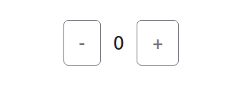

State and Lifecycle
State and Lifecycle
Віртуальний DOM (VDOM) — це концепція програмування, у якій "віртуальне" представлення користувацького інтерфейсу зберігається в пам'яті та синхронізується з «реальним» DOM за допомогою бібліотеки, такої як ReactDOM. Цей процес називається узгодженням (reconciliation).
Коли ми змінюємо якийсь компонент і він має перерендеритися, спочатку зміни вносяться у VDOM, після чого відбувається порівняння (узгодження / reconciliation) з реальним DOM, і перерендерюється лише частина яка змінилася.
Пропси можна лише ЧИТАТИ !!!
function Input(props) {
props.value = 'baz' // НЕ МОЖНО
return <input value={props.value} />
}
Конструктор — єдине місце, де можна безпосередньо змінювати state.
this.state = { count: 0 };
В інших місцях необхідно використовувати this.setState().
this.setState({ count: state.count + 1 })
setState(updater, [callback]) додає в чергу зміни у стані компонента.
Тобто думайте про setState() як про запит на зміни, а не як про команду для негайного оновлення компонента.
this.setState((state, props) => {
return {counter: state.counter + props.step};
});
Оновлюються лише передані властивості. Тобто в цьому прикладі зміниться лише значення productId
class Cart extends Component {
state = {
value: 'defaultValue',
productId: null,
};
...
onAddToCart = (productId) => {
this.setState({ productId });
}
}
constructor() - ініціалізація компонента. Викликається до того, як компонент буде примонтований.
this.state = { counter: 0 };
this.handleClick = this.handleClick.bind(this);
Під час виклику він перевіряє this.props і this.state та повертає один із наступних варіантів:
Викликається одразу після монтування (тобто коли компонент вставляється в DOM).
Викликається безпосередньо перед відєʼднанням і видаленням компонента.
У цьому методі виконується необхідне очищення: скасування таймерів, мережевих запитів і підписок, створених у componentDidMount().
Викликається одразу після оновлення. Не викликається під час першого рендеру.
Метод дозволяє працювати з DOM під час оновлення компонента. Також він підходить для виконання мережевих запитів, які виконуються на основі результату порівняння поточних пропсів із попередніми. Якщо пропси не змінилися, новий запит може бути не потрібен.
Цей метод потрібен для рідкісних випадків, коли state залежить від змін в props
null, щоб нічого не оновляти.
shouldComponentUpdate(nextProps, nextState) {
return nextProps.id !== this.props.id
}
Викликається безпосередньо перед етапом "фіксації" (наприклад, перед додаванням у DOM).
Він дозволяє вашому компоненту отримувати певну інформацію з DOM (наприклад, положення прокрутки) перед її можливими змінами. Будь-яке значення, повернуте цим методом життєвого циклу, буде передане як параметр у componentDidUpdate().
Назви події в React пишуться у стилі camelCase замість нижнього регістра.
В JSX ви передаєте функцію як обробник події замість рядка.
<button onclick="activateLasers()">Кнопка в html</button>
<button onClick={activateLasers}>Кнопка в react</button>
function handleSubmit(e) {
e.preventDefault();
console.log('Відправлена форма.');
}
<button onClick={(e) => this.deleteRow(id, e)}>Видалити рядок</button>
<button onClick={this.deleteRow.bind(this, id)}>Видалити рядок</button>
SyntheticEvent - це кросбраузерна обгортка над нативним екземпляром події. Ця обгортка допомагає подіям працювати однаково в усіх браузерах (тобто мати однакові властивості у всіх браузерах).
handleClick = (e) => {
console.log(e.nativeEvent)
}
Обробники викликаються на фазі спливання (bubbling). А щоб оголосити подію на фазі перехоплення (capture), просто додайте Capture до назви події; наприклад, замість onClick використовуйте onClickCapture, щоб обробити подію на фазі перехоплення.
<button onClickCapture={this.handleClick}>Кнопка</button>
Створити counter, який буде додавати/віднімати коли клікаємо на відповідні кнопки

Зробити форму авторизації: